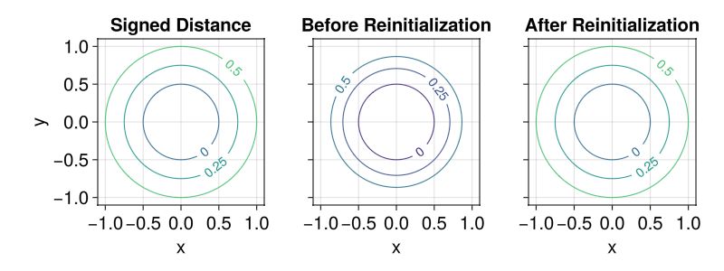

Reinitialization
Reinitialization transforms a level set function into a signed distance function without moving the zero level set. This is useful when the level set has been distorted by advection or other terms, since many numerical schemes assume $|\nabla\phi| \approx 1$.
Two approaches are available:
EikonalReinitializationTerm: a PDE-based approach that evolves the level set under the equation $\phi_t + \text{sign}(\phi)(|\nabla\phi| - 1) = 0$ using the same time-stepping infrastructure as other level-set terms. See the Reinitialization term section.NewtonReinitializer(recommended): a geometry-based approach that samples the interface, builds a KD-tree, and computes the exact signed distance to the interface using Newton's closest-point method. It is applied between time steps and converges in a single pass.
Usage
Call reinitialize! on a LevelSet to reinitialize it in place:
using LevelSetMethods
using GLMakie
grid = CartesianGrid((-1, -1), (1, 1), (100, 100))
sdf = LevelSet(x -> sqrt(x[1]^2 + x[2]^2) - 0.5, grid)
ϕ = LevelSet(x -> x[1]^2 + x[2]^2 - 0.5^2, grid)
LevelSetMethods.set_makie_theme!()
fig = Figure(; size = (800, 300))
ax1 = Axis(fig[1, 1]; title = "Signed Distance")
ax2 = Axis(fig[1, 2]; title = "Before Reinitialization", ylabel = "", yticklabelsvisible = false)
ax3 = Axis(fig[1, 3]; title = "After Reinitialization", ylabel = "", yticklabelsvisible = false)
contour!(ax1, sdf; levels = [0.25, 0, 0.5], labels = true, labelsize = 14)
contour!(ax2, ϕ; levels = [0.25, 0, 0.5], labels = true, labelsize = 14)
reinitialize!(ϕ, NewtonReinitializer())
contour!(ax3, ϕ; levels = [0.25, 0, 0.5], labels = true, labelsize = 14)
fig
You can verify that the reinitialized level set is a signed distance function:
max_er = maximum(eachindex(grid)) do i
abs(ϕ[i] - sdf[i])
end
println("Maximum error after reinitialization: $max_er")Maximum error after reinitialization: 9.90232162934035e-9Automatic reinitialization in LevelSetEquation
Pass reinit to LevelSetEquation to reinitialize automatically every n steps:
eq = LevelSetEquation(;
terms = (AdvectionTerm(𝐮),),
levelset = ϕ,
bc = PeriodicBC(),
reinit = 5, # reinitialize every 5 time steps
)The integer shorthand creates a NewtonReinitializer(; reinit_freq = n) with default settings. For full control over the algorithm parameters, pass a NewtonReinitializer directly:
eq = LevelSetEquation(;
terms = (AdvectionTerm(𝐮),),
levelset = ϕ,
bc = PeriodicBC(),
reinit = NewtonReinitializer(; reinit_freq = 5, upsample = 4),
)You can also reinitialize the equation's current state manually at any time:
reinitialize!(eq)NewtonSDF: a reusable signed distance function
LevelSetMethods.NewtonSDF wraps the same closest-point algorithm in a callable object, letting you evaluate the signed distance at arbitrary points without modifying the level set in place. This is useful when you need a signed distance function as an ingredient in a larger computation (e.g. to measure distances or to build an extension velocity):
using StaticArrays
sdf_obj = LevelSetMethods.NewtonSDF(ϕ; upsample = 8)
# query the signed distance at arbitrary points
sdf_obj(SVector(0.0, 0.0)) # distance from origin to the circle-0.499999907052595The interface sample points used to build the KD-tree can be retrieved with LevelSetMethods.get_sample_points:
pts = LevelSetMethods.get_sample_points(sdf_obj)
println("$(length(pts)) interface sample points")15652 interface sample pointsWhen the underlying level set changes, use LevelSetMethods.update! to rebuild the KD-tree, reusing the same interpolation order and tolerances:
ϕ2 = LevelSet(x -> x[1]^2 + x[2]^2 - 0.3^2, grid) # smaller circle
LevelSetMethods.update!(sdf_obj, ϕ2)
sdf_obj(SVector(0.3, 0.0)) # should be ≈ 0-6.125887880865768e-16